A "full node" is a client that owns the blockchain and is sharing blocks and transactions across the network. A "node" refers to any computer that's running NewYorkCoin client software and is able to send and receive transactions. It could also be mining, but it doesn't have to. Lightweight clients such as Electrum Wallets or Mobile Wallets are NOT considered full nodes since they do not download the blockchain or share the blockchain with the network.
NOTE: Make sure to disable any low power mode, sleep, and suspend settings to ensure your device is online at all time.
If you have an older version of NewYorkCoin wallet installed, then backup your wallet.dat first before going any further.
You may get a Windows Security Alert. Check both boxes to add an exception in your firewall to allow NewYorkCoin to make outbound connections.
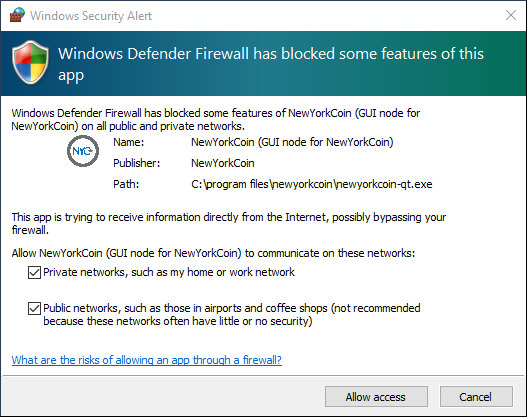NewYorkCoin - Wallet is now installed.
If you want to run NewYorkCoin Wallet in Graphical User Interface (GUI) then continue onto the next step. If you prefer to run NewYorkCoin Daemon (recommended for advanced users only), then skip to the NewYorkCoin Headless Daemon install section below.
NOTE: You cannot run both the GUI and the Daemon in the same data configuration directory at the same time.
Port Forwarding on your router must be configured. Port 17020 will need to be forwarded to your computers IP address on your LAN to allow incoming connections. Checkout PortForward.com if you need help with this.
Once the blockchain is downloaded your location will show up on the Map and thank you for helping to strengthen the NewYorkCoin network.
Let's start by creating a config file and set the daemon to run as a full node.
# You must set rpcuser and rpcpassword to secure the JSON-RPC api rpcuser=newyorkcoinrpc rpcpassword=Change_Me # Listen for RPC connections on this TCP port rpcport=18823 # RPC connection from localhost allowed rpcallowip=127.0.0.1 # Run newyorkcd as a daemon daemon=1 # Run newyorkcd as a full node server=1 # listen=1 to accept connections from outside listen=1 # Run the full node on port 17020 port=17020 # Limit the max number of connections to this node maxconnections=125
Now let's create a batch file to start the Daemon
@echo off pushd C:\NYCoin\newyorkcoin-1.3.1\bin start /min newyorkcoind -datadir=C:\NYCoin\Data
You might also get a Windows Security Alert. Check both boxes to add an exception in your firewall to allow NewYorkCoin to make outbound connections
Then type:cd C:\NYCoin\newyorkcoin-1.3.1\bin
newyorkcoin-cli -datadir=C:\NYCoin\Data getinfo
Click the UP arrow key then press Enter and you'll notice the "blocks" size count increase. The blockchain is being downloaded to C:\NYCoin\Data and this will take some time (depending on your computer and connection speeds) to fully sync.
If you get an error: {"code":-28,"message":"Loading block index..."} which is actually good. It will take some time to re-index. Check again in a few minutes by clicking the UP arrow key then Enter. Eventually you should see something like below: 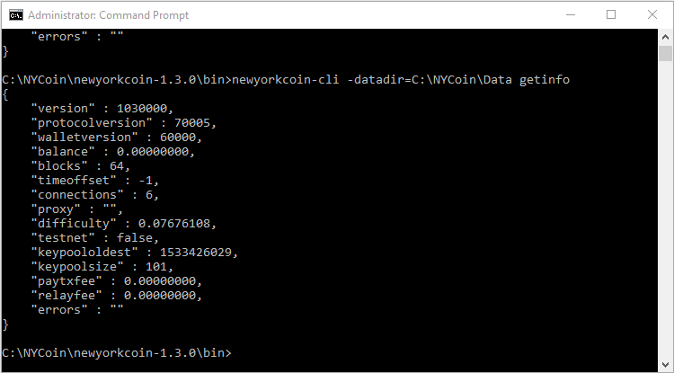
NOTE: You will need to keep the file running on your taskbar to keep the daemon running. To close the daemon, close the minimized command prompt window on your taskbar. You can also configure the batch file to run on startup or run as a service so the daemon automatically starts after a reboot.
Port Forwarding on your router must be configured. Port 17020 will need to be forwarded to your devices IP address on your LAN to allow incoming connections. Checkout PortForward.com if you need help with this.
Congratulations if you made it this far, once the blockchain is downloaded your location will show up on the Map and thank you for helping to strengthen the NewYorkCoin network.
If you have an older version of NewYorkCoin wallet installed, then backup your wallet.dat first before going any further.
You should now see this:
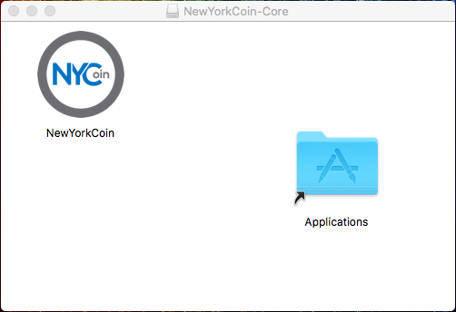You may get a pop-up "NewYorkCoin" can't be opened because it is from an unidentified developer. click OK here.
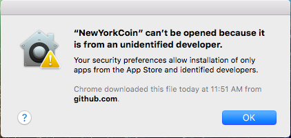Now we will need to override the security settings so we can open the app anyway.
The app is now saved as an exception in your security settings, and you can open it in the future by doubleclicking it just as you would any app.
The wallet will need to synchronize with the network and download the blockchain. This will take several hours.
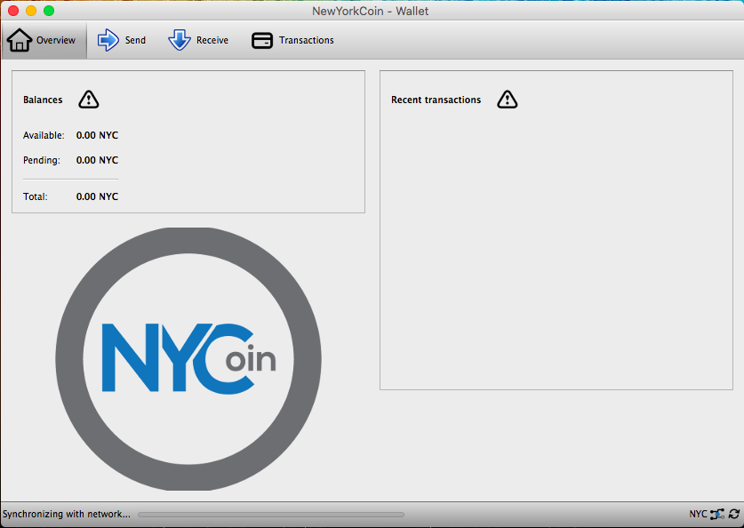Port Forwarding on your router must be configured. Port 17020 will need to be forwarded to your computers IP address on your LAN to allow incoming connections. Checkout PortForward.com if you need help with this.
Once the blockchain is downloaded your location will show up on the Map and thank you for helping to strengthen the NewYorkCoin network.
Raspberry Pi is a low cost and low power device that can run silently 24 hours a day without worrying about uptime. It requires less maintenance and you have the advantage of plugging it in anywhere in your house and you wont even need a monitor, keyboard, or mouse plugged in once it's configured.
Currently we are shipping pre-built ready to plug in Raspberry Pi's with the blockchain already downloaded and ready to act as a full node. If you're interested, you can purchase your own from our Shop.
NOTE: There are bundled kits available to purchase with all the parts listed above if you prefer to take that route. You will also need a keyboard, mouse, and a monitor for the initial setup. Also, a computer with a MicroSD card reader.
NOTE: For this guide I will be using Windows. If you have a Mac then please use the appropriate software listed above and try and follow along. Make sure all the software listed are installed on your computer and your Raspberry Pi is plugged in before you get to first step.
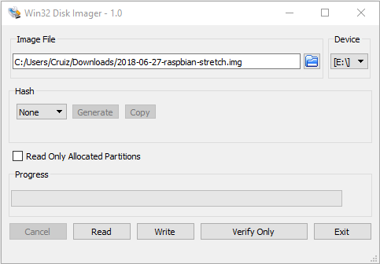
Once it's finished, Raspbian will be imaged onto your MicroSD card. If you run into any issues with this, then try formatting your SD card using SDformatter first.
Your Pi should now be booted into desktop environment called PIXEL. Raspbian with PIXEL (which stands for 'Pi Improved Xwindow Environment, Lightweight').
When a new Raspbian image is booted for the first time, a simple setup wizard runs automatically to walk you through the basic setup operations.
Once you get to the end of the wizard, it will not re-appear when your Pi is booted. If you do want to use it again in the future for any reason, you can relaunch it from Terminal by typing:
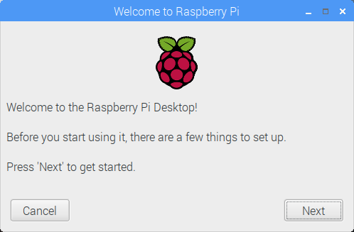sudo piwiz
ifconfig
Look for wlan0 for WiFi or eth0 for ethernet to get your IP address (inet).
NOTE: I highly recommend you reserve the IP address on your router which in the long run will make things a lot easier. You can reserve by using the MAC address. Search Google if you need help with this.
The setup wizard already updated everything so there is no need to run it now but this is a useful command to know if you want to update everything again in the future.
sudo apt update && sudo apt upgrade -y
A swap file allows the Micro SD card in the Raspberry Pi to be used as RAM. This step is important since we'll be downloading the entire blockchain on the Pi.
Let’s start by editing the file /etc/dphys-swapfile by running: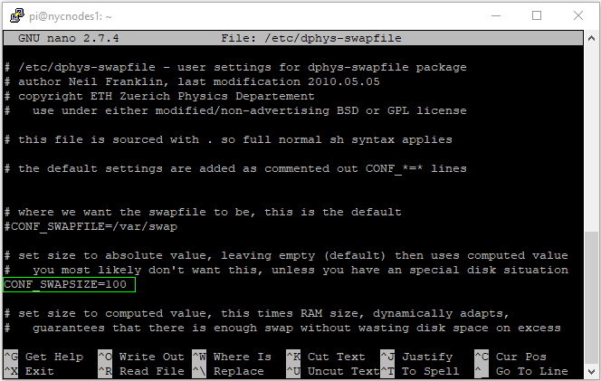sudo nano /etc/dphys-swapfile
Change the line CONF_SWAPSIZE=100 to CONF_SWAPSIZE=1024 and hit Ctrl + X followed by Y then Enter to save the file.
sudo dphys-swapfile setup && sudo dphys-swapfile swapon
sudo apt-get install autoconf libevent-dev libtool libssl1.0-dev libboost-all-dev libminiupnpc-dev -y
mkdir ~/bin cd ~/bin
git clone https://github.com/NewYorkCoin-NYC/nycoin.git
cd nycoin ./autogen.sh ./configure --enable-upnp-default --disable-wallet make -j2 sudo make install
NOTE: It's recommended to use make -j2 since it's quicker than just make. The -j2 tells the Pi how many of its processor cores to build with. The higher the number the faster it builds. In theory up to -j4 is possible but not recommended. This will take over an hour to compile, so take a break. If you encounter errors just run make instead.
newyorkcoind
You'll get an error message below since the config file does not exist
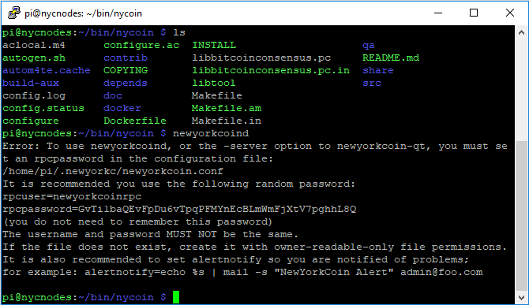NOTE: Linux is case sensitive so make sure you type everything per instructions
cd ~ cd .newyorkc
nano newyorkcoin.conf
# You must set rpcuser and rpcpassword to secure the JSON-RPC api rpcuser=newyorkcoinrpc rpcpassword=Change_Me # Listen for RPC connections on this TCP port rpcport=18823 # RPC connection from localhost allowed rpcallowip=127.0.0.1 # Run newyorkcd as a daemon daemon=1 # Run newyorkcd as a full node server=1 # listen=1 to accept connections from outside listen=1 # Run the full node on port 17020 port=17020 # Limit the max number of connections to this node maxconnections=20
Hit Ctrl + X followed by Y then Enter to save the file.
cd ~ nano startnyc.sh
#!/bin/bash /usr/local/bin/newyorkcoind -daemon
Hit Ctrl + X followed by Y then Enter to save the file.
chmod +x startnyc.sh
crontab -e
Select option 2 for nano as the editor and press Enter
@reboot /home/pi/startnyc.sh
Should look like below:
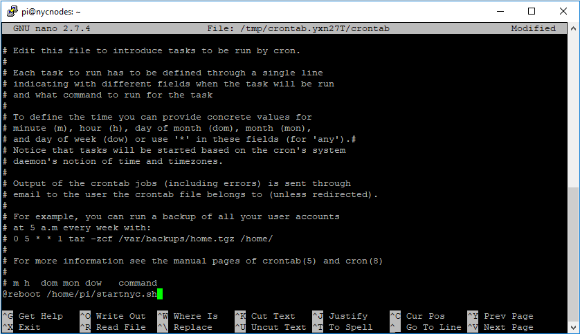Hit Ctrl + X followed by Y then Enter to save the file.
sudo reboot
newyorkcoin-cli getinfo
If everything is working correctly, you should see:
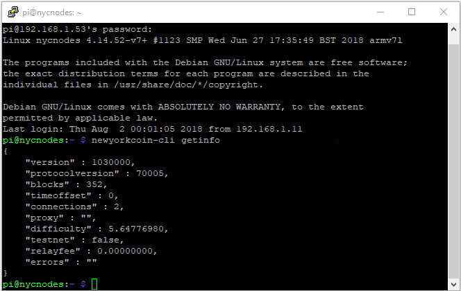In the Terminal or SSH window if you click on the UP arrow then press Enter you will notice the "blocks" size count increase.
The blockchain is being downloaded to /home/pi/.newyorkc and this may take an entire week to fully sync.If connection count is stuck at 0 and does not seem to increase then try rebooting or restarting the daemon.
sudo reboot
Or, restart the daemon and run getinfo again
newyorkcoin-cli stop newyorkcoind -daemon & newyorkcoin-cli getinfo
Port Forwarding on your router must be configured. Port 17020 will need to be forwarded to your devices IP address on your LAN to allow incoming connections. Checkout PortForward.com if you need help with this.
Congratulations if you made it this far, once the blockchain is downloaded your location will show up on the Map and thank you for helping to strengthen the NewYorkCoin network.
If you have NewYorkCoin Wallet installed on your PC then you can copy the blackchain data from your PC wallet to the Pi to save time on the sync time. Connect to your Pi using WinSCP to transfer the files.
newyorkcoin-cli stop
NOTE: .newyorkc is a hidden directory, to be able to view it in WinSCP you'll need to enable the view hidden files option. Click on Options > Preferences > Panels, then click the Show hidden files checkbox and OK to Save.
newyorkcoind -daemon &
newyorkcoin-cli getinfo
Look at the blocks count, it should be much higher. You're all set and saved yourself over a week of download time. Your location should show on the Map shortly.
Connect to your Raspberry Pi via SSH using Putty or remote to desktop using VNC Viewer from your computer. You can also connect to it with your keyboard/mouse/monitor and use Terminal.
newyorkcoin-cli stop
cd /home/pi/.newyorkc
rm -v -r !("newyorkcoin.conf"|"wallet.dat")
cd ~/bin cd nycoin git pull ./autogen.sh ./configure --enable-upnp-default --disable-wallet make -j2 sudo make install
sudo reboot